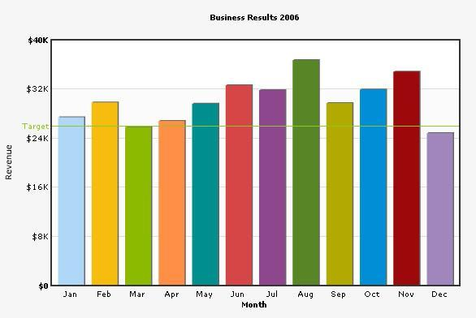

Single Series Chart XML |
Single Series Charts depict only one set of data on the chart. A simple 2D single series looks like this: |
|  |
|
In this section, the XML structure of single series chart has been explained in a generic way. Let's recall our previous XML. It looked something like this (minus a few new nodes): |
<graph caption='Business Results 2006' xAxisName='Month' yAxisName='Revenue' showValues='0' |
| Brief Explanation |
| The <graph> element is the main element of any FusionCharts XML document - it represents the starting point and the ending point of data. The <graph> element has a number of attributes which helps to manipulate the chart. You can find the list of all the attributes for this element in "Chart XML Reference" of each chart. In the most general form, attributes have the following form: The attributes can occur in any order and quotes can be single or double like xAxisName='Month'. However, you need to make sure that a particular attribute occurs only once for a given element. Moving on, each <set> element (which is a child element of the <graph> element) represents a set of data which is to be plotted on the graph and determines a set of data which would appear on the graph. A typical <set> element would look like: <set name='Jan' value='27400' color='AFD8F8' hoverText="January, 17400" link="details.asp?month=jan" showName="1"/> Next we have the <trendLines> element. Using this function of the chart, you could draw custom lines on the chart to represent a trend. For example, in our above XML, we have defined a line at 26000 to represent the average target sales for the period. <line startValue='26000' color='91C728' displayValue='Target' showOnTop='1'/> |